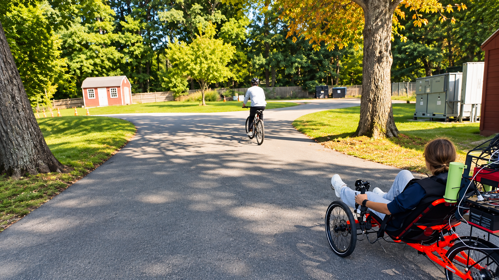
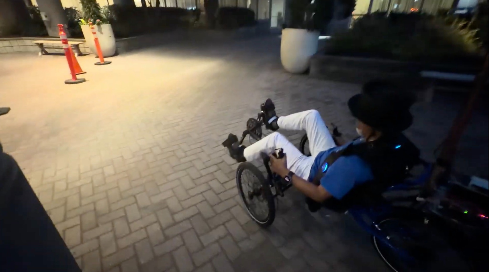
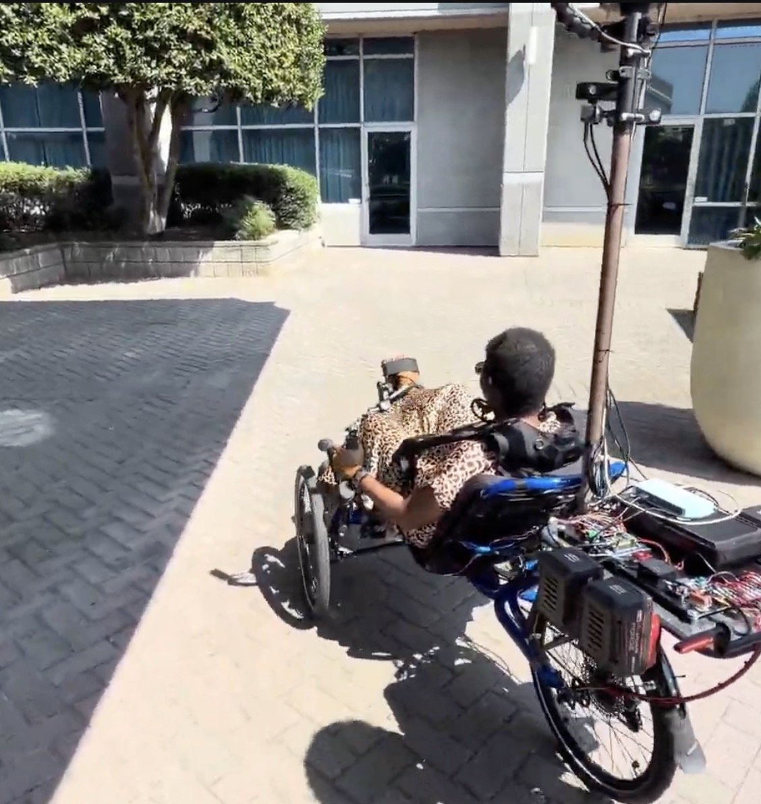
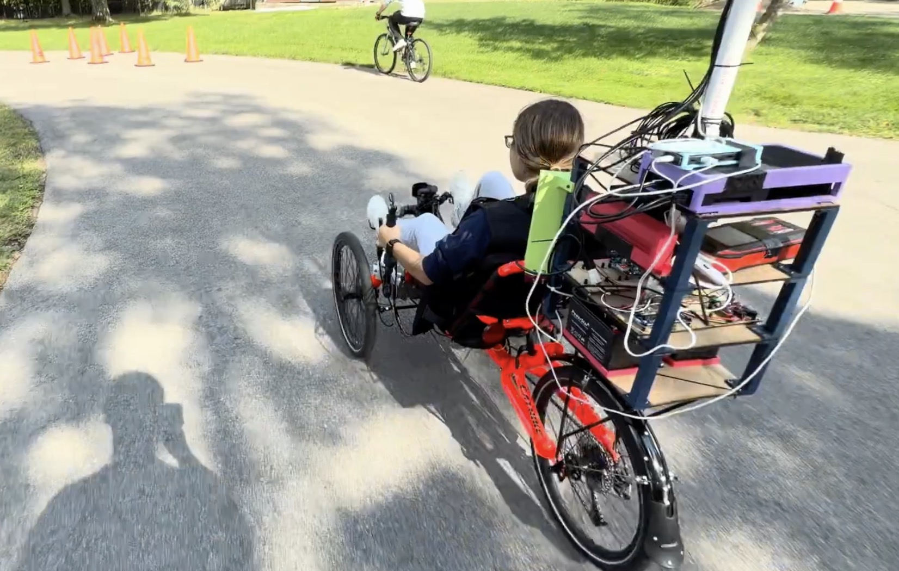
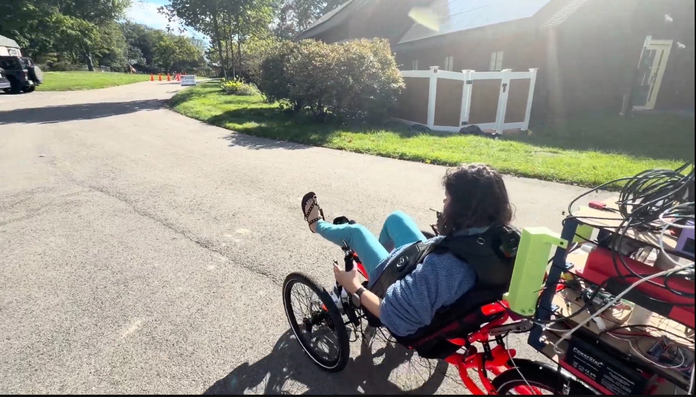

01
Shared Autonomy
The rider remains physically engaged while CyFI assists with steering and safety-critical braking.
A human-centered shared-autonomy cycling platform supporting accessible outdoor mobility through autonomous steering, safety support, and multimodal rider feedback.

CyFI is an accessible semiautonomous cycle designed to enable blind and low-vision riders to cycle independently. The rider provides propulsion and retains manual braking, while CyFI guides navigation steering and handles emergency braking. Audio and vibrotactile feedback communicate upcoming system actions, and riders can request spoken descriptions of their surroundings. CyFI emerged through a two-year longitudinal co-design partnership with a blind mechanical designer and iterative evaluations involving 39 blind and low-vision participants. In the final evaluation, 94% felt safe and 76% trusted autonomous steering. A separate 1.2 km neighborhood ride examined sustained operation across intersections, parked and moving vehicles, stop signs, and changing roadway geometry, while revealing remaining limitations in current robot navigation models.
The rider remains physically engaged while CyFI assists with steering and safety-critical braking.
Audio and vibrotactile feedback communicate system actions and environmental information during riding.
Evaluation progressed from structured riding environments toward community and sustained neighborhood operation.
Selected scenes illustrate CyFI operating with participants across outdoor riding and evaluation scenarios.




Participant demographics from the formative studies are summarized below.
| ID | Age | Gender | Race / Ethnicity | Blindness | Prior Cycling | Physical Activity | Days / week |
|---|---|---|---|---|---|---|---|
| Site 1: Campus (n = 9) | |||||||
| P26 | 64 | Man | White | Blind | Yes | Low | 1–2 |
| P27 | 26 | Woman | White | Blind | Yes | Low | 3–4 |
| P28 | 29 | Woman | White | Blind | Yes | Moderate | 3–4 |
| P29 | 52 | Woman | White | Blind | Yes | Moderate | 3–4 |
| P30 | 64 | Woman | White | Legally blind | Yes | High | 1–2 |
| P31 | 52 | Man | White | Blind | Yes | Moderate | 1–2 |
| P32 | 36 | Man | White | Blind | Yes | Moderate | 3–4 |
| P33 | 73 | Woman | White | Blind | Yes | Moderate | 3–4 |
| P34 | 63 | Woman | Black | Blind | Yes | Low | 3–4 |
| Site 2: Community Organization (n = 5) | |||||||
| P35 | 67 | Woman | White | Blind | Yes | Low | 1–2 |
| P36 | 64 | Man | Hispanic | Legally Blind | Yes | Low | 1–2 |
| P37 | 63 | Woman | White | Blind | Yes | Low | 1–2 |
| P38 | 52 | Woman | White | Blind | Yes | Moderate | 1–2 |
| P39 | 21 | Woman | White | Blind | Yes | Low | 3–4 |
CyFI was evaluated across progressively more realistic riding conditions, including structured riding courses, community settings, and sustained neighborhood operation.
Evaluation included sustained operation rather than isolated system demonstrations.
Riding scenarios included turns, intersections, roadway infrastructure, vehicles, and changing road geometry.
Shared control and multimodal feedback remain integrated throughout the rider experience.
Representative clips illustrate CyFI during sustained real-world riding and participant evaluation sessions.